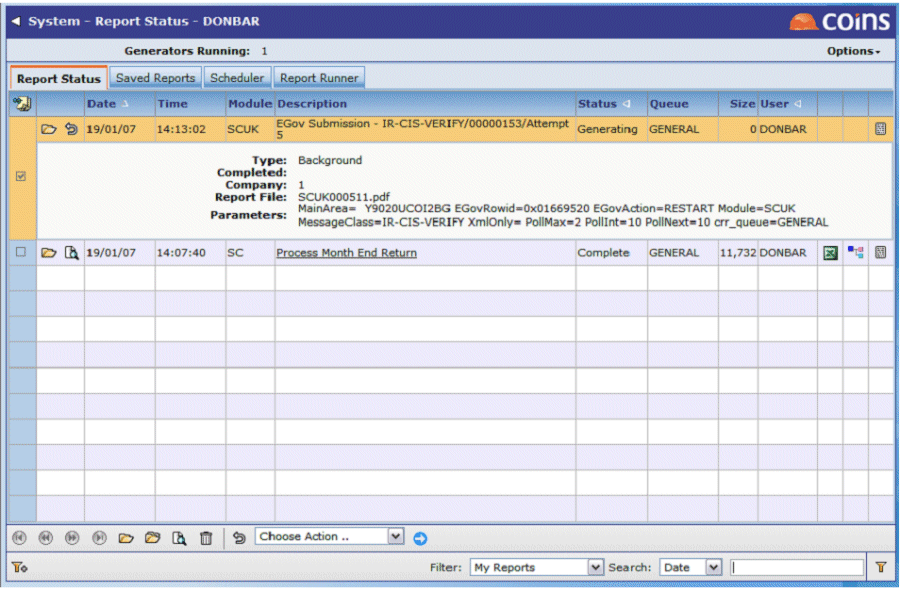

Report Queue
Electronic submission to the Government Gateway is done by a in the background report queue. Whether the submission is actually happening depends on the status of the .
- Waiting – submission has not begun yet.
- Generating – is communicating with the Government Gateway.
- Complete – no more processing is occurring and the submission has reached some end state (COMPLETE, ERROR or TIMEOUT).
To check the status of the background report queue, go to Report Status.
